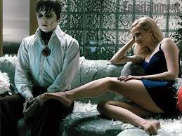

Dark Shadows:
Uma Comédia Gótica com um Coração Sombrio Dark Shadows, dirigido por Tim Burton, não é uma simples adaptação do seriado de mesmo nome; é uma reimaginação espirituosa e sombria que equilibra o humor negro com uma atmosfera gótica carregada de nostalgia. O filme acompanha Barnabas Collins, um vampiro do século XVIII, que após ser aprisionado por Angelique Bouchard, uma bruxa vingativa, é libertado no século XX e confrontado com uma realidade completamente diferente e com sua própria família em ruínas.
força do filme reside em sua capacidade de abraçar o absurdo. Burton, mestre do estilo gótico e do humor excêntrico, cria um universo visualmente deslumbrante e repleto de personagens caricatos, mas ao mesmo tempo, profundamente humanos. A estética peculiar, com suas cores vibrantes contrastando com a atmosfera sombria, contribui para a construção de uma atmosfera única e memorável. Johnny Depp, no papel de Barnabas Collins, entrega uma performance excepcional, capturando a essência do personagem: um vampiro aristocrático e sofrido, que luta para se adaptar a um mundo que mudou drasticamente. A química entre Depp e os demais atores, especialmente com Eva Green como Angelique Bouchard, é palpável e contribui para a dinâmica intrigante e divertida do filme.
o humor seja um elemento central, Dark Shadows não deixa de lado os temas mais sombrios. A trama explora a fragilidade da família Collins, os segredos obscuros do passado e a busca por redenção de Barnabas. A relação complexa entre Barnabas e Angelique, marcada por amor, ódio e vingança, é um dos pontos altos do filme, revelando a profundidade emocional dos personagens. O filme utiliza elementos clássicos do gênero gótico, como mansões assombradas, mistérios familiares e personagens excêntricos, mas os reinventa com uma pitada de humor e modernidade. A sátira sutil da sociedade americana dos anos 70 também contribui para a riqueza da narrativa.
Em resumo, Dark Shadows é uma experiência cinematográfica singular, que combina o charme peculiar de Tim Burton com uma narrativa envolvente e personagens memoráveis. É uma comédia gótica que, apesar de sua leveza, aborda temas profundos e nos deixa com uma sensação de nostalgia e um sorriso no rosto. É um filme que celebra o absurdo e a beleza da escuridão, sem deixar de lado o coração humano que pulsa por trás da maquiagem e dos efeitos especiais.